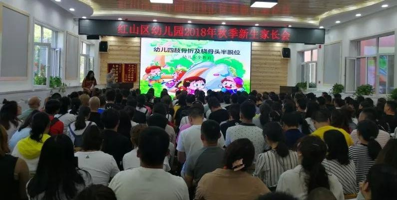

为传播正确的儿童生长发育知识，近日，农工党红山支部在幼儿园新学期开学之际，到“同心”实践基地红山区幼儿园开展幼儿安全教育讲座活动。

此次活动针对家长在幼儿成长过程中护理知识的盲区和误区，特别邀请赤峰市第二医院骨科吴雪海医生，向幼儿家长们详细介绍儿童骨骺的分类、生长，骨龄的发育，骨骺损伤治疗方法及如何通过合理运动和科学饮食促进骨骼发育，保证孩子健康成长等知识。讲座内容贴近幼儿家长心理特点，语言通俗易懂，现场气氛活跃，互动频繁，反应热烈，达到了预期效果。
近年来，农工党赤峰市委充分发挥组织和群体优势，积极组织各支部选择党员中经验丰富、专业较强的医务人员组成专家服务团，不定期到学校、社区等场所开展健康知识讲座，广泛传播健康知识，受到群众热烈欢迎，树立了良好的社会形象。